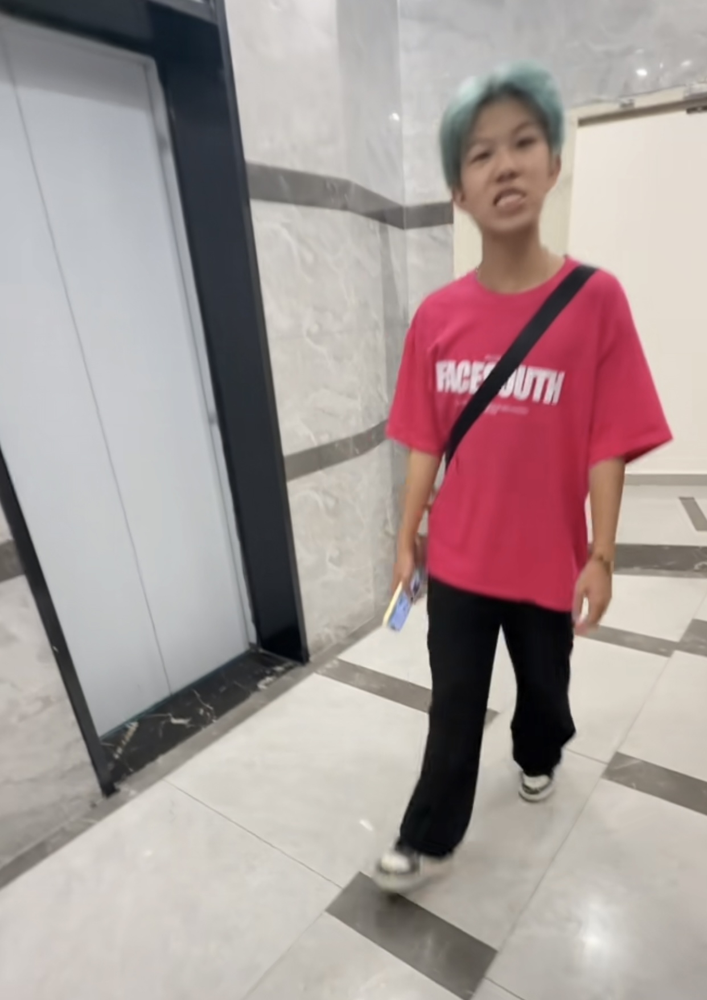

怪不得王安宇在现在就出发里说大吉大吉的。[泪奔][泪奔][泪奔]
当时在现在就出发里他就叫大喜叫成了大吉
是be啊[泪奔][泪奔][泪奔]
时光就是能下逆手棋，所以能找到神之一手。
爱你这部剧太吓人了！职场正常，暗恋正常，家庭正常，女配正常……我已经很多年没看过这么正常的电视剧了……
这样的父亲好有分寸感[听歌]真好
娟子我已经分不清是夸是损了
娟子果然还是忘不了老宋[黑脸]老宋昵称都不一样，叫的是“我们家”[黑脸]
《做一只没有男女概念的野驴，快乐的去拉磨》
从杉子那边来的[捂脸] 一个与烟火死磕到底，一个与难哄死磕到底[捂脸]
谁懂我的笑点[泪奔][泪奔][泪奔][泪奔]母女俩抱在一起，女主爸蹲在门口偷偷看[泪奔][泪奔][泪奔]
吐槽，我有三爱看，娟子，杉子和珊子[赞][赞]
这么久了 不仅没放过老宋 还加上了哄男[比心]
我还以为这期不会带老宋了呢[捂脸][捂脸]你果然对老宋爱的深沉[憨笑][憨笑]
都去看爱你好吗!拍摄风格真的超喜欢，剧本也OK，看得我全程嘴下不来[泪奔]最重要的是我也学中药
杉子铭记桑延，娟子不忘宋焰，珊子与时团共赴沧海桑田[憨笑][强壮]
哈哈哈我们爱你太正常了，也就四刷而已[捂脸]
出宫省亲要苦苦哀求，听说阮惜文要参加晚宴就出宫了？
感觉是：她想成全她，她也想成全她
敌人少一笔便是故人[流泪]
原是相互讨厌的名门贵女，贵妃以为她过的比自己好，谁知道她也很惨，所以有些惺惺相惜
一个被永远困在皇宫的人，仍然不忘让她获得自由[流泪]
一句话证明听过，妈妈总是对我说[捂脸]
一大群人一整个剧最后一集才斗倒一个庄仕洋[捂脸]
一直都不知道这个秘密[逞强落泪][逞强落泪]
我被营销号忽悠的一愣一愣的，又是庄语迟没死呢又是吃人肉
突然听你开始夸人，我都有点不习惯了劳斯……[黑脸][黑脸][黑脸][黑脸]
真美女不需要磨皮[舔屏]
送给比较客观的博主[送心]
这里的时候女主说不怕不怕，但是我怕啊[流泪][流泪][流泪][流泪][流泪]
我服了就是因为看了宋祖儿的这部我直接成为了她的古装剧粉 兴致冲冲看完八集就去搜祖鹅的古装剧发现一部都没有[愉快]
看了两集觉得女主随时皱着眉头一个表情，看到后面没人信她，我也一直皱着眉头了[听歌]
女主真的好美 我无时无刻都在感叹 还不是那种木头美人
杉子和娟子都夸了，那我肯定得去看看了[黑脸][OK]
宋祖儿的是可以播了啊，那我的折腰是不是可以抬[送心]上了？
男主说着不怕，身体悄悄躲到了女主的身后了哈哈哈[捂脸]
这种死亡角度内鱼能抗住的真没几个
杉，我发现看你的视频可以不看字幕[泣不成声]，台词功底好棒[憨笑]
宋祖儿真的美啊[色] 很耐看的紧致脸
《本次比赛收益全部用于赔款》
乾隆有点独啊
这个男主是老公人设天花板，有地位有钱有颜还纯情小狗，平常能撒娇有事能抗事，当时为了捧男二女二硬压着这个男主人设很不理解
“宫尚角给了你什么，我能给你吗？” “你和东方青苍有情，那我呢？”
这部剧最大的败笔就是捧男二女二。[赞]
主CP真的又甜又纯爱，可惜一米四非要捧男二女二[愉快][愉快][赞][赞]
特别纯爱啊，我一个人看了三四遍[黑脸]
郭敬明用长生花来宣传 却砍掉男女主高光 硬捧男二女二男三 从此他以后任何一部剧我都不会再打开
都怪你…全想起来了…[逞强落泪]
怎么没有云为衫视角的[流泪]我们阿云的成长经历也很值得细细扒开[流泪][流泪][流泪]
虽然小四为了捧配角，故意砍男主高光，不少人也觉得男主人设很弱，但我真的好喜欢宫子羽，善良有什么错，而且他也很上进啊，成长型的男主很迷人，关键他还专一又深情
追过云之羽的都知道虞书欣张凌赫生而不养
想知道拿督在中国的知名度高吗？他走在大街上会被认出来吗[捂脸]
李宗伟：我见过许多天才，但是他们都叫我门槛
为啥换开头[九转大肠]是因为故事被当作真的了吗[九转大肠]
在这里我特别为这一岁多还说不到话的小女孩点赞[赞][赞][赞][赞][赞][赞]

聪明的妹妹救了哥哥一命[比心]
泥嚎
我刚网购的，用觉得被骗了，怪怪的

居然是只蓝狗🐶[泪奔][泪奔]
🐶：没想到吧，是我[看]
还有蓝狗[捂脸]
20岁的人还被同学欺负[捂脸]
这哪里是混混啊 这是义父啊[看]
上学之前能听这么美妙的音乐也值了
当真爱出现的时候...
我们不再讨论动物[流泪][流泪]
早上起来的大学生听到这个
是时候把那把吉他拿出来...擦擦灰了
断眉真是个天才……[躺平]
一个自学吉他很久的人告诉你，弹吉他一定要靠时间的沉淀，慢慢的积累经验，别人早上7点练习，你6点练习，别人晚上练习到9点，你练习到10点，早晚练习，勤能补拙，耐得住寂寞，练吉他不能急，刚开始弹不好很正常，时间久了，自然就挂到咸鱼上去了
自学多久大概能到这种程度..
最后不对 师傅快回头我不去了
然后我的补充得到一万六千多人认可[看]
《女人绞尽脑汁不如男人灵机一动》[看] 哈哈哈哈哈要把我下巴笑掉了被转转回收了
男人还得男人治
所以说，毒妇一词到底应该说谁[思考][思考][思考]
难怪有那么多杀妻的毒男，真是心机深沉诡计多端。
可是你们没人想过 这招会有人用在女人身上吗[微笑]
我觉得男人真可怕[微笑]
这一招虽险，但胜算却极大
所以到底谁说男的单纯没心眼子的[看]
女宝宝要谨慎，不要穿任何陌生人送的贴身衣物！！！！！
《一米69的大高个》《像那个冬瓜走来走去》[捂脸][捂脸]哈哈哈哈哈哈
不仅发群里还要发抖音上哈哈哈哈
香 你弟是那个吗[暗中观察]
救命这个表情真的绷不住[黑脸]
《没有发到群里去发到抖音上来了》
《一米69的大高个》《像那个冬瓜一样走来走去的》《那嘴唇都发黑了讲什么东西在哪里》《嗯～很可爱哦》《你不要发到群里去哦》她发抖音上而已[大笑]
家母是不是在家每天不停地熬中药[憨笑]
开头我还以为是什么时髦老太太
发没发到群里不知道 但是发到抖音了[黑脸]
以前会帮妈妈杀央，现在会帮姐姐拿垃圾[捂脸]
是不是骂了“鲁麦基”[憨笑][强壮]
谁懂“鲁麦基”出来的那种救赎感[泣不成声]
《这一路鸟语花香》[愉快] 
我可以发在群里吗
素直男吗[泣不成声]
把crush当特务整呢？
他喜欢你舅
就这字体差距，实在不行咱也可以不谈[憨笑]
希望你一直这么乐观
有没有一种可能，她是字面意思[九转大肠]
二战结束了，你知道当上特务了[憨笑][赞]
“12岁他就退休了” “那你的眼睛是不是也好了”
我只允许这样的小孩童言无忌[憨笑]
比我晚的长高10厘米
真正的童言无忌就应该是这样的。 而不是乱骂人。[流泪]
盲者与稚女偶遇于途，闻犬相随。盲者莞尔问曰：“汝可知犬龄几何？”女童答之：“当有十二。”盲者笑而言：“十二载矣，已然退矣！”女童天真曰：“既已退，君目亦可复明乎？”
一句童言，既暖且酸，直教人叹世事多舛，亦有欢慰其中。
这才是真的的童言无忌而不是满嘴脏话的少羽小孩[捂脸]
真希望小女孩说的话能实现
稚童尚幼，不知犬寿有限之，眼盲难愈
什么才叫做真正的童言无忌，这个小孩表演的淋漓尽致。[捂脸]
这才是正常小孩说出来的话，而不是那些………
宸汐缘，真的好看！难得的原创剧本，当初刚出来的时候就因为男女主年龄大而不被看好，但是最后还是凭借好剧情好演技而口碑起飞！真的推荐大家一看，尤其是女主失去耳识下凡历劫这一段剧情，特别好！
Read more: